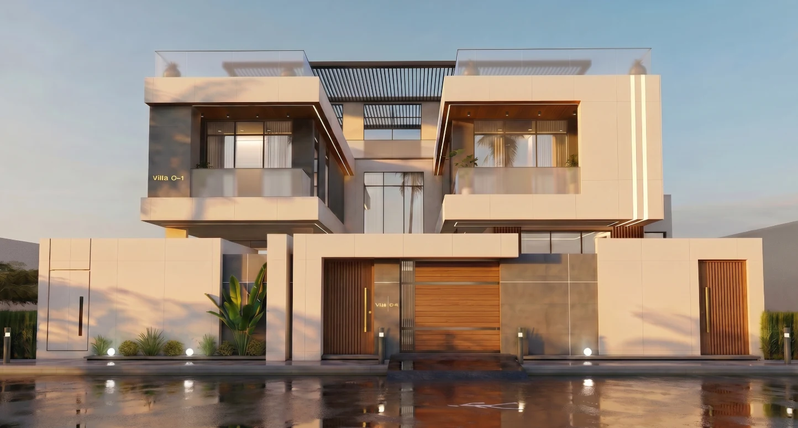
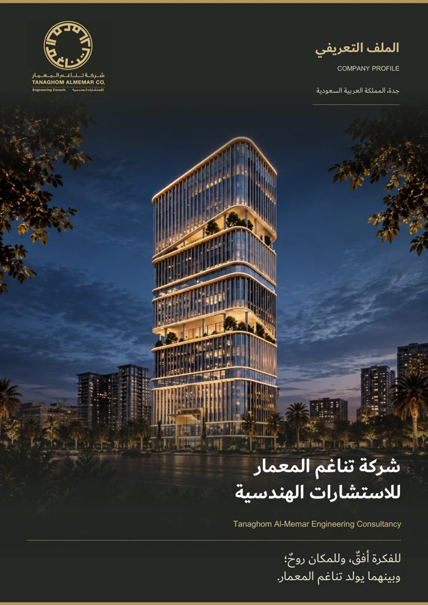

مكان يرتقي بتجربة الإنسان
نسهم في بيئة عمرانية تستثمر إمكانات الموقع وتمنح كل مشروع هويته؛ عمارة تنتمي لمكانها وتجمع جودة الفراغ ووضوح الاستخدام.
نفهم احتياجك، نحدّد نطاقنا، ونرتّب مراحل المشروع معك.
حنا شركة استشارات هندسية في جدة، نجمع التصميم المعماري والداخلي وإدارة المشاريع مع خدمات هندسية مساندة. نبدأ من الموقع والاستخدام وأولوياتك، ثم نحوّلها إلى بدائل مدروسة تساعدك تقرّر.
نؤمن إن جودة المكان تبدأ من ترابط عناصره: توزيع الفراغات، وتكامل الأنظمة، والخامات، ووضوح التفاصيل. ولهذا التصميم عندنا مرتبط بالتنسيق والمتابعة من البداية.

نسهم في بيئة عمرانية تستثمر إمكانات الموقع وتمنح كل مشروع هويته؛ عمارة تنتمي لمكانها وتجمع جودة الفراغ ووضوح الاستخدام.
نربط أهداف المطور والمالك بتصميم متكامل ومخرجات هندسية واضحة، من خلال فهم المتطلبات ومراجعة البدائل وتوثيق القرارات وتنسيق التخصصات.
نراجع الموقع والاستخدام واللي عندك من مستندات، ونتعرّف على أولوياتك وميزانيتك والوقت اللي يناسبك.
نوضّح الخدمات والمخرجات والمراحل والمسؤوليات وآلية المراجعة، ويصير نطاق العمل معلوم للطرفين.
نطوّر المقترحات والتفاصيل، وننسّق التخصصات المشمولة، ونعرض عليك الخيارات عشان تعتمدها على بيّنة.
نوثّق الملاحظات والاعتمادات ونسلّم المخرجات. ومتابعة التنفيذ ودعم الاستلام تكون حسب نطاق اتفاقنا.
«للفكرة أفقٌ، وللمكان روحٌ؛ وبينهما يولد تناغم المعمار.»
تناغم المعمار
خدماتنا، وطريقتنا في الشغل، ومجموعة من أعمالنا. حمّل البروفايل وتصفّحه على راحتك، أو شاركه مع شركائك في المشروع.
PDF · ٢٤ صفحة · نسخة مناسبة للجوالقل لنا وش تحتاج، وأرسل اللي عندك من مخططات ومعلومات. نراجعها معك ونحدّد الخطوة المناسبة.